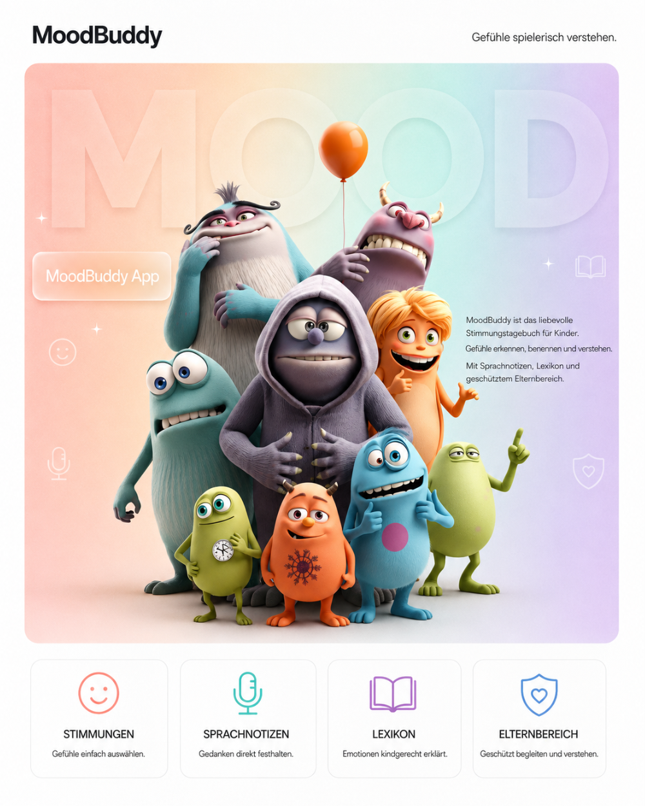

Für Kinder
Gefühle auswählen, Intensität einschätzen und Erlebnisse mit Notizen oder Sprache festhalten.
Ein liebevolles Stimmungstagebuch für Kinder, das spielerisch beim Erkennen, Benennen und Verstehen von Gefühlen hilft. Mit Emotionsauswahl, Sprachnotizen, Gefühls-Lexikon und geschütztem Elternbereich.
Projekt anfragen →
MoodBuddy ist ein kindgerechtes Stimmungstagebuch, das Kindern hilft, ihre Gefühle besser zu verstehen, zu benennen und auszudrücken.
Die App begleitet Kinder spielerisch dabei, ihre aktuelle Stimmung auszuwählen, die Intensität ihres Gefühls einzuschätzen und festzuhalten, was dahintersteckt. Ob fröhlich, traurig, wütend, ängstlich, stolz oder überfordert: MoodBuddy macht Emotionen sichtbar und verständlich.
Kinder können ihre Einträge mit Kategorien wie Schule, Freunde, Familie oder Freizeit verbinden und bei Bedarf eigene Notizen oder Sprachnachrichten hinzufügen. Ein liebevoll gestaltetes Gefühls-Lexikon erklärt verschiedene Emotionen altersgerecht und unterstützt Kinder dabei, Worte für ihr inneres Erleben zu finden.
Für Eltern bietet MoodBuddy einen geschützten Elternbereich mit hilfreichen Einblicken in die emotionale Entwicklung ihres Kindes. Alle Daten bleiben lokal auf dem Gerät, ohne Cloud, Tracking oder externe Analyse.
Gefühle auswählen, Intensität einschätzen und Erlebnisse mit Notizen oder Sprache festhalten.
Ein altersgerechtes Gefühls-Lexikon hilft dabei, Emotionen besser zu benennen.
Ein geschützter Elternbereich gibt hilfreiche Einblicke, während alle Daten lokal bleiben.